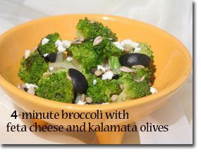

"Quick Steamed" Broccoli
Scientific studies have found steaming to be the best way to cook Broccoli to preserve its health-promoting nutrients and take advantage of its cholesterol-lowering benefits. It tastes best served the Mediterranean way with my easy-to-prepare dressing. Red onions add a sweet flavor to this recipe. Note: In the winter months Broccoli tends to be more tender and you'll only need to "Quick Steam" for 3 minutes.
Prep and Cook Time: 4 minutes
Ingredients:
- 1 lb Broccoli
- 1/2 medium red onion, sliced
- 3 TBS extra virgin olive oil (or to taste)
- 2 tsp lemon juice
- 1 medium clove garlic
- Sea salt and pepper to taste
Directions:
- Fill bottom of steamer with 2 inches of water.
- While steam is building up in steamer, separate the florets from the stem as close to the florets as possible. Cut florets into quarters and slice the stems into 1/4-inch pieces. Let them sit for 5-10 minutes before steaming. Press or finely chop garlic and let garlic and sliced onions sit for at least 5 minutes.
- For al denté Broccoli, place the stems and sliced red onions in the steamer, cover with a tight fitting lid, and steam for 2 minutes. Add florets, cover, and steam for 4 minutes.
- Transfer to a bowl. For more flavor, toss Broccoli with the remaining ingredients while it is still hot. (Mediterranean Dressing does not need to be made separately.) Research shows that fat-soluble vitamins and carotenoids found in foods, such as Broccoli, may be better absorbed when consumed with fat containing foods like extra virgin olive oil. Dressing helps tenderize Broccoli. 5-10 minutes after it is dressed you will find it will have become more tender.